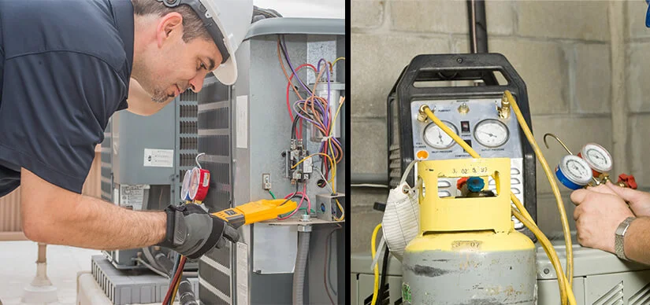

The Pros And Cons Of HVAC Repair VS. Replacement
Publish Date : 02-12-2024
Views : 3132

When an HVAC system fails to offer the required comfortable air,
it is important to find the solution. One of the toughest
options that most people face is if the unit should be repaired
or replaced. Before making a decision about
HVAC repair in Orange County
or replacement, it is important to understand the benefits and
drawbacks associated with each option. This blog post will
provide an overview of the pros and cons of HVAC repair vs.
replacement to help you make an informed decision.
When to repair your HVAC
When your HVAC isn't working as well as it once did, it's
frequently worthwhile to make repairs. Here are some of
the advantages:
- It could save you money in the long term: Unless your HVAC goes completely out, calling for repairs soon can save money in the future. As early repairs can tackle more serious damage, this frequently limits problems to fewer areas to fix and reduces future expenditures. If it has been more than two years since your last HVAC maintenance cost check, schedule one immediately.
- Extend Your Unit's Lifespan: Not all HVAC replacement problems necessitate total replacement! A minimal maintenance call might frequently be sufficient to keep your device working smoothly and efficiently. Check out these easy measures to improve it.
- Comfort Levels Recover Quicker After Repairs: Unlike major replacements, which normally take some time to set up and configure appropriately, little repairs to your system normally allow normal operations to resume right away! Furthermore, they are frequently simpler to complete than replacing entire portions of the unit, potentially minimizing disturbances down the line if future troubles occur.
The Disadvantages of Repairs:
- Repairs Can Take Times: Not everyone realizes this, but small HVAC repairs can be completed in a few hours! It normally involves determining what is wrong and deciding to fix it, which can prolong the overall process significantly depending on the situation.
- Lack Of Guaranteed Repair Effectiveness: Finally, sometimes minor issues turn out to be far more serious than either you or an expert expected (which is why routine checks are highly suggested). Trying to perform extensive DIY repairs may not just wind up doing more damage and costing you more, but may not even solve the underlying issue totally.
When to replace your HVAC
As HVAC units get older, it can sometimes be impossible to
repair them correctly, necessitating a major component
replacement to get them working again. There are several
things to consider before HVAC replace. So let's know its major advantage over maintaining the
current units:
- It Can Increase Energy Efficiency: Because they follow contemporary energy standards set forth by law today, newly built equipment will be able to perform considerably differently than prior versions, typically doing jobs better while expending significantly less natural effort over time! In the long term, installing modern parts allows you to decrease extra electricity utility expenditures while also enjoying superior home temperatures!
- Enhanced Capability For Better Air Quality Issues: Today's technologies handle air circulation better overall since they are mainly designed with superior ventilation networks and highly adaptable filtering systems. Compared to older versions, fewer dust and potential allergens will remain in the home. In addition, when upgrading units, there is generally a greater chance for added features like advanced sound suppression technology to provide more tranquility indoors overall!
- Increase the Value of Your House by Adding the Following: Having newer equipment inside a home can enhance the market value for individuals seeking to make quick property investments. Potential buyers prefer ready-made elements that do not require rapid maintenance, which a complete system provides wonderfully.
The Disadvantages of Replacing:
- Initial Prices Might Be High: While many components become relatively comparable eventually once you take overall savings from the enhanced capacity described previously, purchasing a brand new system frequently implies spending large chunks of cash upfront, particularly if done suddenly owing to sudden breakdowns.
- Lack of Installation Information Resources Available: Aside from hiring pros to assist you smoothly transition over current setups, locating suitable instructions regarding installation and setup of the correct items isn't always obvious or accessible online, leading to potentially dangerous DIY attempts should things get stuck during the procedure. That happens fairly regularly, meaning you'll need competent hands leading each stage independently ensuring precision and correctness all round!
Conclusion
Before making a final choice of whether you choose HVAC
repair vs. replacement, it is essential to consider the
advantages and disadvantages carefully. Also, there are
numerous resources accessible when considering such tasks
if help is required directly; consulting pros and
obtaining the information mentioned here can help ease
difficult transitions.
Category